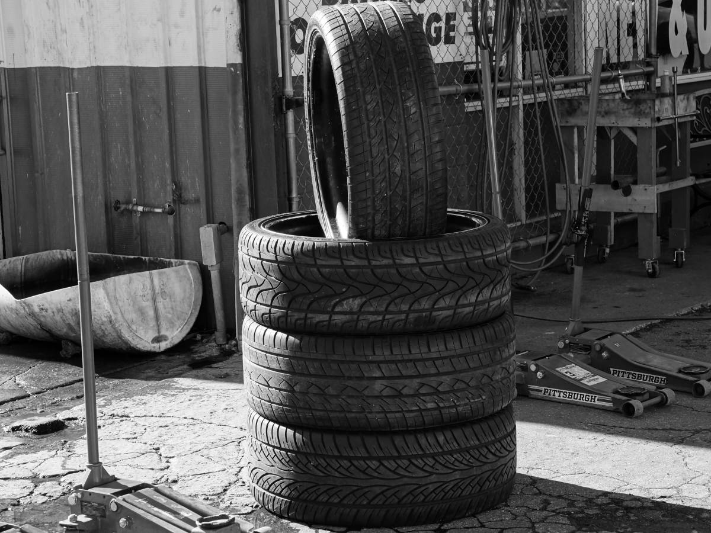
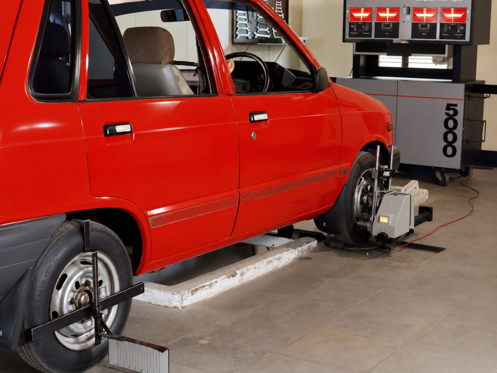
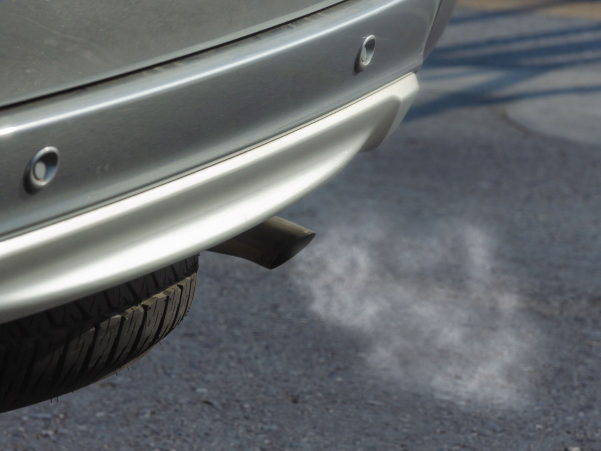
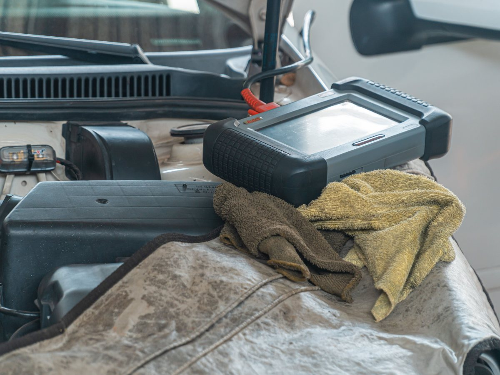
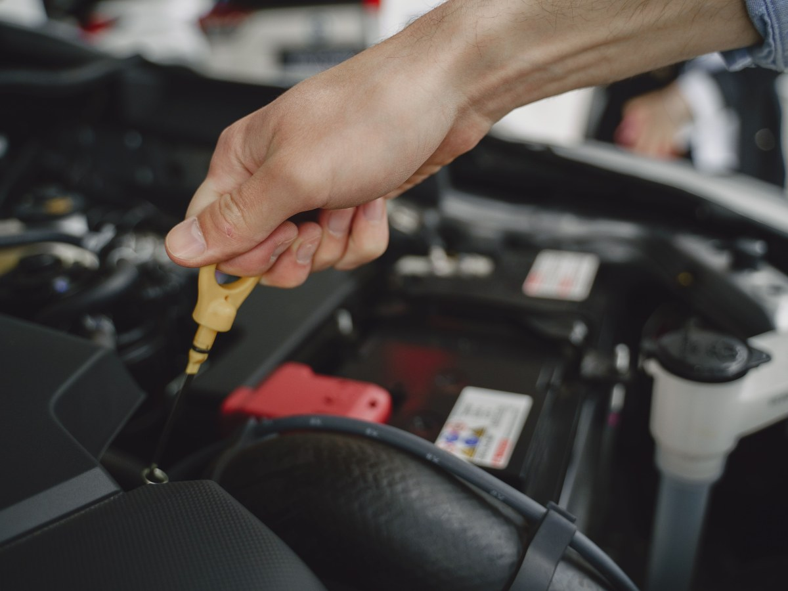
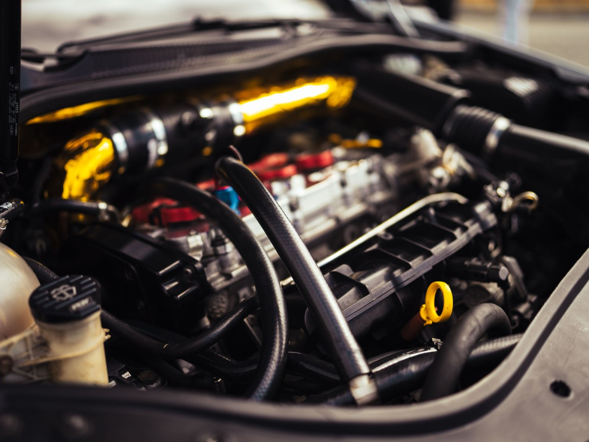
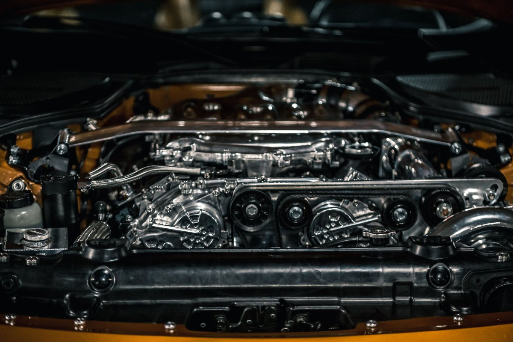
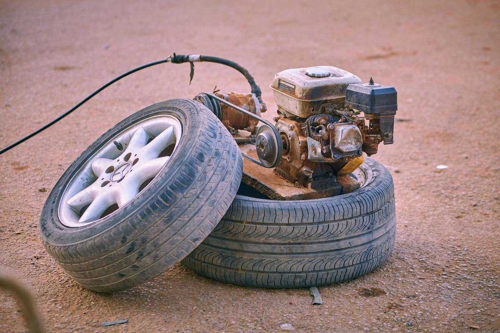
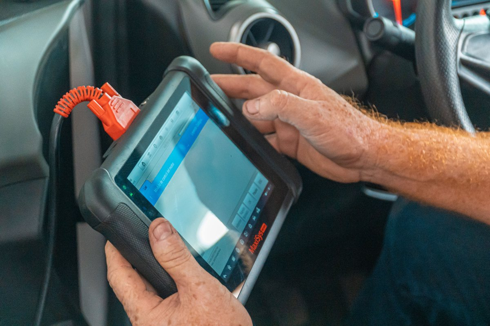
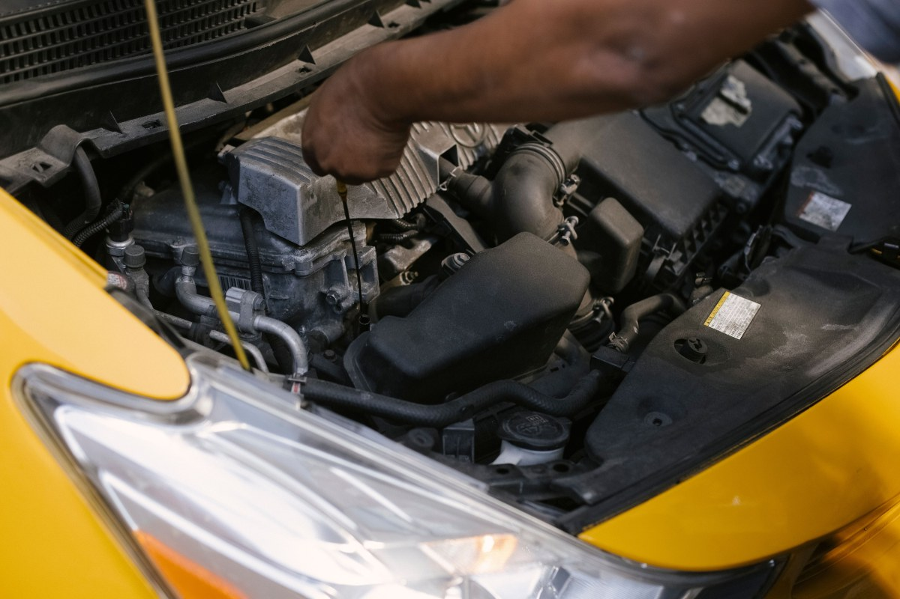

Angol · Pedro de Oña 345
Que pase la revisión a la primera.
Neumáticos, alineación y mecánica en el centro de Angol.
- 369reseñas en Google
- 4,4de nota promedio
- 4marcas: Bridgestone, Kumho, Shell y Mobil
- 0páginas: angola.cl dice «próximamente»
El trámite que le duele a todos
¿Por qué rechazan un auto en la revisión?
Cuatro causas que se ven antes de ir a la planta.
- 01
Los neumáticos
Banda gastada o dispares entre sí.
- 02
Los gases
Motor desafinado, emisión alta.
- 03
La alineación
El auto se desvía al frenar.
- 04
Las luces
Una ampolleta quemada basta.
Los criterios los aplica la planta de revisión, no el taller.
Una revisión antes ahorra volver a la planta.
En Pedro de Oña 345
Lo que se hace en el taller
-

Distribuidor Bridgestone y Kumho
Neumáticos
Venta y cambio.
-

Para que no tire
Alineación y balanceo
Dirección derecha.
-

Antes de la planta
Análisis de gases
Y afinamiento.
-

Luz en el tablero
Escáner e inyección
Diagnóstico electrónico.
-

Shell y Mobil
Lubricantes
Cambio de aceite.
-

Cuando no parte
Baterías y repuestos
Mecánica general.
Servicios y marcas según su ficha publicada.
369 reseñas y un 4,4.
En una ciudad donde todos se conocen
Caucho, aceite y herramienta
Un día en el taller






Fotos de referencia: el taller de verdad lo muestra su equipo.
Dónde estamos
Pedro de Oña 345, Angol
- Dirección
- Pedro de Oña 345
- Teléfono
- (45) 271 3523
- Reseñas
- 369 en Google, nota 4,4
- Horario
- Falta el horario
Para cotizar neumáticos, tenga a mano la medida.
Pedro de Oña 345, Angol Abrir en Google Maps
Para el dueño
Qué es real y qué falta
Lo verificado
El nombre, la dirección, el teléfono, las 369 reseñas con 4,4, los servicios y marcas, y que angola.cl no tiene página.
Lo de ejemplo
Las causas de rechazo y las fotos.
Lo que falta
Un celular para WhatsApp, el horario y fotos del taller.